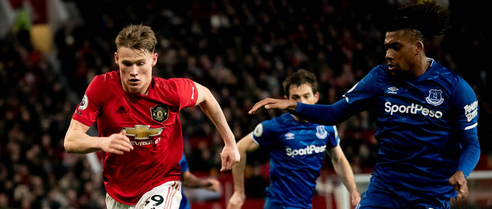
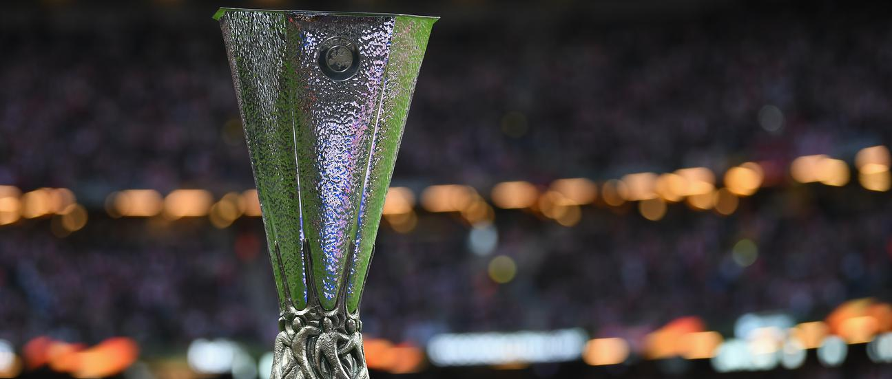

News
Videos
Team
Shop
News
Videos
Team
Shop
Solskjaer makes Goodison vow
OLE REVEALS BRUNO'S INSIGHT INTO LASK
UNITED'S BLADES DATE REARRANGED
CHANGES TO UNDER-23S SCHEDULED ANNOUNCED
PLAYER-OF-THE-MONTH NOMINEES REVEALED

EVERTON V UNITED: YOUR ESSENTIAL INFO
UTD UNSCRIPTED: FOOTBALL IS IN MY BLOOD
TEAM NEWS: WILL MARTIAL BE FIT FOR THE EVERTON TRIP?
SCHOLES: FERNANDES LOOKS LIKE A SPECIAL TALENT
TWO-GOAL FRED WINS MAN-OF-THE-MATCH AWARD

WHO WILL WE FACE IN THE EUROPA LEAGUE LAST 16?
TALKING POINTS: UNITED V CLUB BRUGGE
SOLSKJAER REACTS TO FIVE-GOAL VICTORY
UNITED 5 CLUB BRUGGE 0 (AGG:6-1)
SOLSKJAER EXPLAINS MARTIAL'S ABSENCE
IGHALO MAKES HIS FIRST START FOR UNITED
DE GEA EXCLUSIVE: WE MUST MAINTAIN THIS LEVEL
MCTOMINAY SAVOURS A 'SCINTILLATING' DISPLAY
RASHFORD IS THE TOAST OF OLD TRAFFORD
Load more news